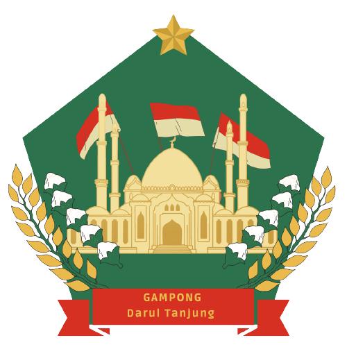

Berdasarkan data historis tokoh-tokoh Gampong, bahwa Gampong Darul Tanjung sudah ada sejak tahun 1920 dimana pada masa itu Gampong Darul Tanjung berupa lahan kosong dan kebun tebu. Dengan datangnya perantau dari daerah lain yang hanya ada beberapa orang mereka menggarap lahan kosong tersebut menjadi lahan pertanian, lahan peternakan serta permukiman.
Berdasarkan pemetaan pertanahan, tanah Gampong Darul Tanjung memiliki 2 status kepemilikan antara lain; milik dan milik adat terdiri dari tanah dan bangunan, tanah sawah,rawa-rawa,kebun kelapa dan lahan kosong (lahan hijau). Populasi penduduk pada saat itu sangat lamban, pada tahun 1920 jumlah penduduk Gampong Darul Tanjung terdapat sekitar 15 Kepala Keluarga dan setelah kemerdekaan tahun 1946 kehidupan masyarakat masih sulit, akibat dari pendudukan Jepang dan agresi II Belanda dimana relawan Aceh dikirim ke Medan Area, untuk melawan Belanda. Pertumbuhan penduduk di Gampong Darul Tanjungterjadi setelah adanya perkawinan antar keluarga dan saudara,dimana masyarakat saat itu masih mengacu pada azas tuntunan agama.
Visi adalah suatu gambaran yang menantang tentang keadaan masa depan yang diinginkan dengan melihat potensi dan kebutuhan Gampong. Penyusunan Visi Gampong Darul Tanjung ini dilakukan dengan pendekatan partisipatif, melibatkan pihak-pihak yang berkepentingan di Gampong Darul Tanjung seperti Pemerintah Gampong, Tuha Peut Gampong (TPG), Tokoh Masyarakat, Tokoh Agama, Lembaga Masyarakat Gampong dan masyarakat gampong pada umumnya. Pertimbangan kondisi eksternal di gampong seperti satuan kerja wilayah pembangunan di kecamatan.
Selain penyusunan Visi juga telah ditetapkan misi-misi yang memuat sesuatu pernyataan yang harus dilaksanakan oleh gampong agar tercapainya visi gampong tersebut. Pernyataan Visi kemudian dijabarkan kedalam misi agar dapat di operasionalkan/dikerjakan.